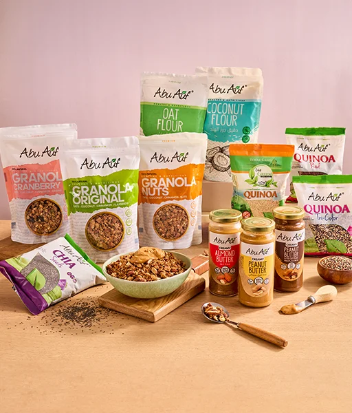
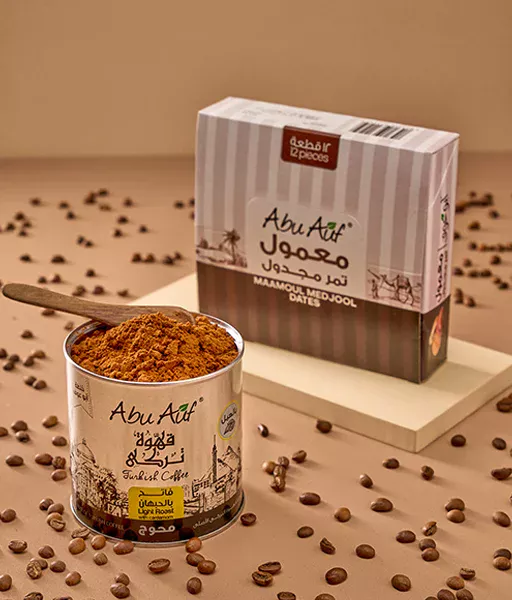

الوصفات
كيكة التمر بالقرفة والشيكولاتة البيضاء
وصفة سهلة تجمع بين حلاوة التمر ودفء القرفة، جاهزة في أقل من ساعة.
شاهد الوصفة
45 دوصفات الفراخ المفضلة لديك بحاجة إلي لمسة تجديد ملئية بالنكهة الشهية واللمسة الفريدة التي حتما ستجعل كل وصفة فراخ وكأن شيف محترف قام بأعدادها. فقط أعطي فرصة لتوابل الفراخ من أبوعوف في جميع تتبيلات الشوي او الفراخ بصفة عامة واستمتع بنكهة التوابل في كل قضمة.
وصفة سهلة تجمع بين حلاوة التمر ودفء القرفة، جاهزة في أقل من ساعة.
شاهد الوصفة
45 دطبق كريمي غني بالمكسرات، مناسب لعشاء سريع في نص ساعة.
شاهد الوصفة
30 د